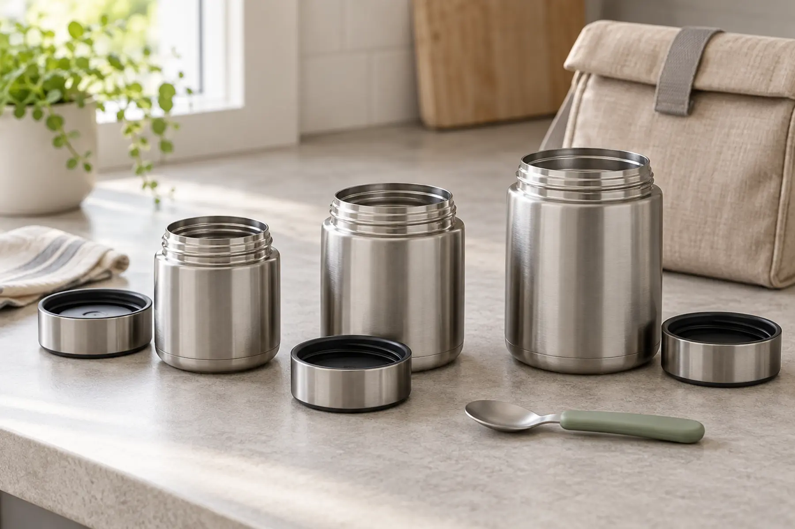

About 10 oz
Best for a small soup, oatmeal, pasta or side when the child routinely eats a modest portion.
Tradeoff: lighter and easier to fit; may be too small for a full older-child lunch.
GEAR · FOOD SAFETY · SCHOOL + DAY TRIPS · BUYING GUIDE
Capacity is the easy part. The useful jar is the smallest one that holds the meal, opens for the actual child, fits the lunch bag and keeps food in the safe range until it is eaten.

USDA guidance says hot food should remain at or above 140°F and cold food at or below 40°F. Food between 40°F and 140°F is in the “danger zone” where bacteria can grow quickly. An insulated jar can help hold temperature, but its retail description cannot tell you the temperature of your food at noon.
For a hot lunch, USDA advises filling the insulated container with boiling water, letting it stand for a few minutes, emptying it, adding piping-hot food, and keeping the lid closed until lunch. An adult should handle the boiling-water step. Follow the exact container maker’s instructions, avoid overfilling, wipe the threads, close the lid correctly and pack the spoon separately.
Do not use this guide as permission to improvise canning, vacuum storage, infant feeding or medical diets. Families managing allergies need the separate food-allergy day-trip plan, including ingredient, contact and cleaning controls.
A 7-year-old who eats a cup of soup needs a different container from a 7-year-old who eats two cups of pasta. Start by putting the normal meal into a measuring cup. Add only the headspace required by the product instructions. Then weigh the filled container with the lid and spoon. Have the child carry the full lunch bag across the house and open the jar while seated.
Do not size up because “they will grow into it.” A half-filled larger jar may have more empty air, may not match the maker’s retention assumptions and still weighs more. It also encourages packing a portion that comes home uneaten. Buy for the current meal and current hands.
Use the actual spoon. The child should reach the food without scraping knuckles on the rim or lifting the jar toward the mouth. Wide mouths handle chunky pasta and stew more easily; a narrower opening can reduce pack width but may turn lunch into an extraction problem.
Fill the jar with warm tap water, close it exactly as directed, dry the outside, then let the child open it at the table. Repeat after it has sat for the real lunch interval because warm contents and cooling can affect how a lid feels. If an adult must loosen it every morning, that is only workable when a reliable adult will be present at lunch.
Inspect the gasket, threads and vent if the model has one. Confirm every removable part can be reinstalled correctly. Test with water in a sealed plastic bin, never over electronics or school papers. A jar that leaks after cleaning, or whose seal cannot be inspected, is not ready for the backpack.
Check the exact dishwasher and gasket instructions. The adult should be able to see, remove when permitted, clean and fully dry every food-contact surface. Deep shoulders, decorative handles and multi-part lids add cleaning work. Odor is not a food-safety test, but trapped food is a clear reason to stop using the jar until it is properly cleaned.
Run the home test with the usual food, usual prep, usual fill level and exact interval. Use a clean, accurate food thermometer when an adult opens the jar. USDA’s safety target is at least 140°F for hot holding. If it misses, do not send that food as though a marketing-hour claim overrides the measurement. Change the method, food, timing or container and test again.
For cold perishable food, USDA recommends an insulated lunch bag and at least two cold sources. A food jar marketed for cold use does not automatically replace the lunch-bag plan. Use the family cooler guide for car-base and day-trip loads, and verify the real temperature instead of guessing from the outside of the container.
Choose roughly 10 ounces when the measured portion fits, the child carries their own lunch and compact size matters most. Choose roughly 14 ounces when the meal is a normal one-container school lunch and the child can manage the loaded jar. Choose roughly 16 ounces for a genuinely larger portion, an older child or a family outing where one adult carries the bag.
The right answer can also be “skip the hot jar.” A cold lunch with two cold sources may be simpler, especially when the child cannot open the jar, the school has no adult help, the food cools below the safe hot-holding target, or the family cannot clean the lid reliably.
Pack the jar next to—not inside—the hydration plan. Water still belongs in a dedicated bottle from the family hydration guide. Add one napkin, one spoon and one clearly labeled backup snack. The day-trip system keeps lunch reachable without unpacking every layer in the parking lot.
If the jar is for a child with a medical condition, swallowing difficulty or temperature sensitivity, use advice from the appropriate clinician or school professional. This is a container decision, not medical guidance.
MAKE THE DAY COUNT
Build the plan your family can finish well, then leave enough energy for the next part of the day.
More family plansTHE USEFUL STUFF
These are practical categories to compare—not a reason to overpack. Check fit, specifications and current reviews before buying.
Paid links: As an Amazon Associate I earn from qualifying purchases. You pay no additional cost.
Use the measured meal, loaded weight, opening and child lid test; confirm the exact maker instructions and dimensions before keeping one.
See current options → COMPARE ON AMAZONCompare mouth width, spoon reach, gasket access, cleaning method and verified temperature at the real serving time.
See current options → COMPARE ON AMAZONChoose the larger category only for a genuinely larger portion; verify loaded carry, lid independence, headspace and the maker’s permitted uses.
See current options →